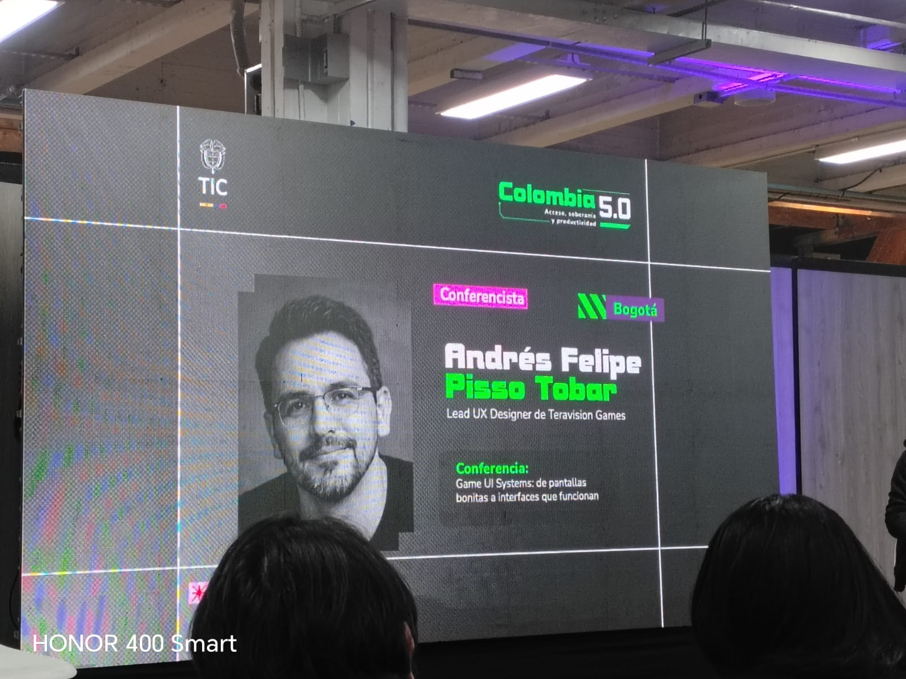
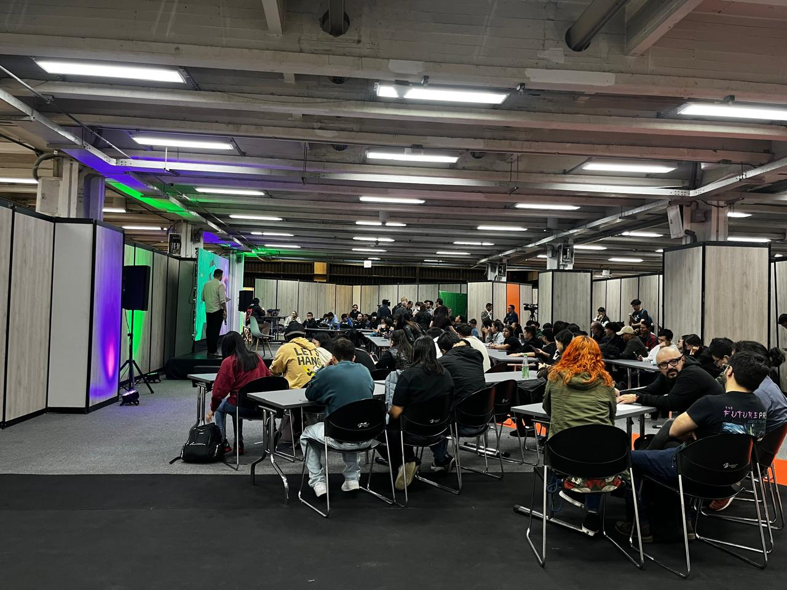

Resumen de las charlas documentadas durante el evento Colombia 5.0 · 8 de mayo de 2026
Summary of talks documented during the Colombia 5.0 event · May 8, 2026
El diseño de interfaces en videojuegos va mucho más allá de hacer algo visualmente atractivo. Esta charla exploró cómo los sistemas de UI en videojuegos deben ser funcionales, legibles y coherentes con la experiencia de juego, priorizando siempre la usabilidad sobre la estética.
Game interface design goes far beyond visual appeal. This talk explored how UI systems in video games must be functional, readable, and coherent with the gameplay experience, always prioritizing usability over aesthetics.
Andrés Felipe Pisso Tobar, Lead UX Designer en Teravision Games, compartió su experiencia diseñando interfaces para videojuegos en el contexto de la industria de desarrollo de videojuegos en Colombia. La charla mostró que una buena UI no es solo una cuestión de colores y formas: es un sistema completo que guía al usuario a través de la experiencia sin que se dé cuenta.
Se abordaron conceptos como la jerarquía visual, el uso del espacio negativo, la importancia de los estados del sistema (feedback visual), y cómo las decisiones de diseño afectan directamente la jugabilidad. Pisso Tobar explicó que en los videojuegos, si la interfaz llama más la atención que el juego en sí, algo está mal: el objetivo es que el jugador siempre sepa qué puede hacer, qué tiene, y qué está pasando, de forma inmediata y sin esfuerzo.
Andrés Felipe Pisso Tobar, Lead UX Designer at Teravision Games, shared his experience designing interfaces for video games within Colombia's game development industry. The talk showed that good UI is not just about colors and shapes — it is a complete system that guides the user through the experience without them noticing it.
Topics included visual hierarchy, negative space, the importance of system states (visual feedback), and how design decisions directly affect gameplay. Pisso Tobar emphasized that in games, if the interface draws more attention than the game itself, something is wrong: the goal is for the player to always know what they can do, what they have, and what is happening — immediately and effortlessly.
Esta charla me hizo pensar en cómo el diseño de interfaces no se limita a los videojuegos: los principios que Pisso Tobar mencionó, como la claridad, la jerarquía y el feedback, son aplicables a cualquier sistema digital que interactúe con personas. Como futuros desarrolladores, debemos entender que el código que escribimos termina siendo usado por alguien, y que nuestra responsabilidad incluye hacer esa experiencia lo más intuitiva posible.
This talk made me think about how interface design is not limited to video games. The principles Pisso Tobar mentioned — clarity, hierarchy, and feedback — apply to any digital system that interacts with people. As future developers, we must understand that the code we write is ultimately used by someone, and that our responsibility includes making that experience as intuitive as possible.
Videos de la conferencia:
Conference videos:
foto:
Photo:

La ciberseguridad como pilar fundamental de cualquier empresa o proyecto digital en la actualidad. El panel exploró cómo los ataques digitales evolucionan constantemente y por qué la seguridad debe ser una prioridad desde el diseño, no un añadido posterior.
Cybersecurity as a fundamental pillar for any company or digital project today. The panel explored how digital attacks are constantly evolving and why security must be a priority from the design phase, not an afterthought.
Este panel reunió a dos expertos en ciberseguridad para hablar sobre los retos actuales de proteger la información en un mundo cada vez más digitalizado. Ángela Janeth Cortés Hernández y Oscar Ruiz presentaron casos reales de vulnerabilidades y ataques, y explicaron cómo tanto las grandes empresas como las personas individuales pueden protegerse mejor.
Uno de los puntos más relevantes fue que la seguridad digital no es solo un problema técnico, sino también humano: muchos ataques ocurren por errores de las personas, como el uso de contraseñas débiles, hacer clic en enlaces sospechosos o no actualizar los sistemas a tiempo. El panel también abordó temas como la autenticación de dos factores, el cifrado de datos, y la importancia de tener políticas claras de seguridad en las organizaciones.
This panel brought together two cybersecurity experts to discuss the current challenges of protecting information in an increasingly digitalized world. Ángela Janeth Cortés Hernández and Oscar Ruiz presented real cases of vulnerabilities and attacks, and explained how both large companies and individuals can better protect themselves.
One of the most relevant points was that digital security is not just a technical problem — it is also a human one. Many attacks happen due to human error, such as using weak passwords, clicking suspicious links, or failing to update systems in time. The panel also covered two-factor authentication, data encryption, and the importance of clear security policies within organizations.
Este panel me hizo entender que la ciberseguridad no es un lujo ni algo exclusivo de grandes corporaciones. En un mundo donde casi todo está conectado, cualquier persona o negocio puede ser víctima de un ataque. La frase del panel que más me impactó fue la idea de que "la cadena de seguridad es tan fuerte como su eslabón más débil", recordándonos que todos somos responsables de la seguridad colectiva.
This panel made me understand that cybersecurity is not a luxury or something exclusive to large corporations. In a world where almost everything is connected, any person or business can be the victim of an attack. The idea that resonated most with me was that a security chain is only as strong as its weakest link, reminding us that we are all responsible for collective security.
foto:
Photo:
